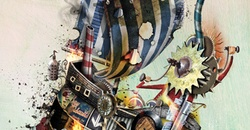

Plástica: Pablo Bernasconi
"Mis libros son como experimentos"

Diseñador, ilustrador, escritor. Más allá de los rótulos, Pablo Bernasconi es un artista que busca que los lectores se involucren, sorprendan y diviertan con lo que encuentran al abrir sus ...